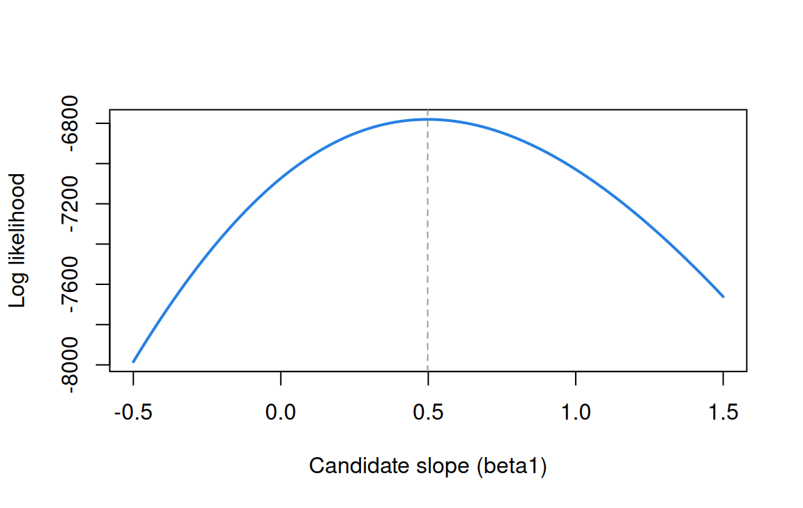
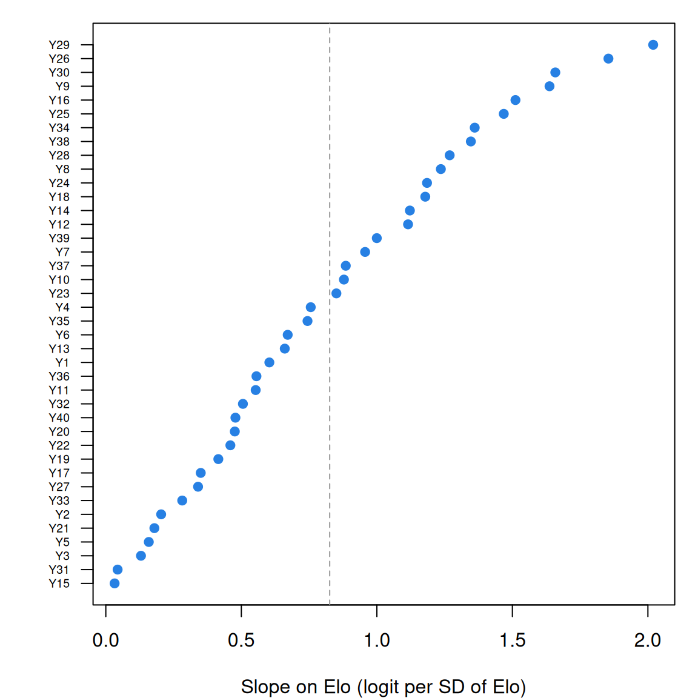

The likelihood and logistic regression
What this is for
Almost every model in this course is fit the same way: write down the probability of the responses we saw, as a function of unknown parameters, and find the parameter values that make those responses most probable. That function is the likelihood, and it will be an object of keen interest from here on. It gives us estimates, it tells us how precise they are, and it lets us compare models. This lesson builds it up from coin flips, uses it to fit a logistic regression, and then points it at real item responses: 40 chess problems and the Elo ratings of the players who tried them. By the end, one small change to that logistic regression leaves us looking at the Rasch model.
Goals
By the end of this lesson you should be able to:
- write down the likelihood for a set of independent observations and say what is fixed and what varies;
- explain why we work with the log likelihood, and read a likelihood surface;
- connect the curvature of the log likelihood to the standard error of an estimate;
- derive the log likelihood of a logistic regression and its derivative, and find the maximum with
optim()and withglm(); - fit logistic regressions to item responses in long format, and explain why giving items their own intercepts changes the slope.
Core ideas
The likelihood
Suppose we flip a coin 10 times and see 7 heads. What is the probability of heads, \(p\)? We don’t know, but we can ask a sharper question: for each candidate value of \(p\), how probable is the sequence we actually observed? For independent flips that probability is a product, \[L(p \mid y) = \prod_{i=1}^{n} p^{y_i}(1-p)^{1-y_i} = p^{k}(1-p)^{n-k},\] where \(y_i = 1\) for heads and \(k\) is the number of heads. Read as a function of the data, this is a probability. Read as a function of \(p\) with the data held fixed, it is the likelihood (Fisher, 1922). Nothing about the data changes as we move along it; we are asking which values of the parameter the data favour.
Note that the likelihood is not a probability distribution for \(p\): it needn’t integrate to 1. In the frequentist reading, \(p\) is fixed but unknown, and the likelihood ranks candidate values. In a Bayesian reading, \(p\) gets a prior distribution, and the likelihood is what turns the prior into a posterior. We use the first reading here and return to priors in Estimating abilities.
Try it: the likelihood for a coin
Move the sliders and note two things. The peak always sits at \(k/n\): the proportion of heads is the maximum likelihood estimate (MLE). And the height of the peak collapses as \(n\) grows. With 200 flips even the most probable sequence is wildly improbable, because any particular sequence of 200 flips is. The height means nothing on its own; the shape is what we use.
Work on the log scale
Products of many probabilities are tiny numbers, small enough that a computer’s arithmetic eventually loses them: the likelihood of a few thousand flips is smaller than the smallest number a double-precision float can hold. So in practice we work with the log likelihood, \[\ell(p) = \log L(p) = k\log p + (n-k)\log(1-p).\] The log turns the product into a sum, which is also far easier to differentiate. And because the log is monotone, whatever maximizes \(\ell\) also maximizes \(L\). Turn on the log likelihood in the widget above: the peak doesn’t move.
The likelihood surface and its curvature
How sure should we be about the estimate? The likelihood answers that too. Here are log likelihoods for the same proportion of heads from three sample sizes, each shifted so its peak sits at zero.
Try it: more data, sharper peak
The peak is in the same place each time, but with more data it is narrower: the log likelihood falls away faster as we move from the estimate, so fewer values of \(p\) remain plausible. That curvature is the precision of the estimate. For the coin, the second derivative of \(\ell\) at the peak is \(-n/(\hat p(1-\hat p))\), and one over the square root of its negative is the familiar standard error, \(\sqrt{\hat p(1-\hat p)/n}\), shown in the table. This link between curvature and precision runs through the whole course: it becomes information in Information, precision, and short forms and the standard error of an ability estimate in Estimating abilities.
Logistic regression by likelihood
Now let the probability depend on a predictor. Recall logistic regression (we write its coefficients as \(\beta\)s, keeping \(b\) for item difficulty from the Rasch model on): for a binary outcome \(y_i\) and a predictor \(x_i\), \[p_i = \Pr(y_i = 1 \mid x_i) = \frac{\exp(\beta_0 + \beta_1 x_i)}{1 + \exp(\beta_0 + \beta_1 x_i)}.\] Each observation has its own \(p_i\), but the likelihood is built exactly as for the coin: \[\ell(\beta_0, \beta_1) = \sum_{i=1}^{n} \Big[\, y_i \log p_i + (1 - y_i)\log(1 - p_i) \,\Big].\] We know the \(y_i\) and \(x_i\); the \(p_i\) depend on the unknown \(\beta_0\) and \(\beta_1\). Differentiating (problem 1 asks you to) gives a pleasingly simple result: \[\frac{\partial \ell}{\partial \beta_1} = \sum_i (y_i - p_i)\,x_i, \qquad \frac{\partial \ell}{\partial \beta_0} = \sum_i (y_i - p_i).\] At the maximum both derivatives are zero. The second equation merits emphasis: at the MLE, the model’s predicted number of successes equals the observed number.
Try it: fit a logistic regression by hand
Sixty simulated observations. Move the intercept and slope to make the curve fit the points, and watch the log likelihood and the two derivatives.
Push the slope above its best value and \(\sum (y-p)x\) turns negative: the curve now predicts too many successes where \(x\) is large. Push it below and the sign flips. The derivative always points uphill, which is what a numerical optimizer uses. (The widget finds the maximum with Newton’s method, which follows the derivative and the curvature together.)
Maximizing in practice
For logistic regression, glm() does the maximizing for us (it uses a version of Newton’s method). But nothing about the likelihood needs glm(): write \(\ell\) as an R function and hand it to a general optimizer such as optim(), and you get the same answer. The simulation below does exactly that. Later lessons use the same move for models glm() can’t fit, and Estimating item parameters opens up the machinery.
Item responses as a logistic regression
One row per response is the shape a logistic regression wants: each row is one binary outcome. So if we have a predictor for each respondent, we can regress responses on it directly. That is what we do with the chess data below: each row is one player’s attempt at one problem, and the predictor is the player’s Elo rating. What makes item responses different from a generic binary outcome is that they come from different items, and items differ. How we account for that matters a great deal.
Simulate
The code below simulates data from a logistic regression, traces the log likelihood over the slope, and finds the maximum two ways: with optim() on our own log-likelihood function, and with glm(). It’s base R, so it runs in a second or two.
Try n <- 50, then n <- 5000. How does the curve change, and what happens to the standard error? (With the seed as written, the standard error of the slope is about 0.43 at \(n = 50\), 0.10 at \(n = 500\) and 0.03 at \(n = 5000\): each tenfold increase in data cuts it by about \(\sqrt{10} \approx 3\).)
Download this code to run it in your own R session.
With real data
We use chess_lnirt: 40 chess problems attempted by 256 players, from the Amsterdam Chess Test (van der Maas & Wagenmakers, 2005). Each player also has an Elo rating, the standard measure of playing strength from tournament results, stored in cov_elo and standardized to mean 0 and SD 1. Elo gives us something rare in item response data: an outside measure of each respondent’s skill. Download the code; it needs only base R.
Code
# Each IRW table has a landing page (itemresponsewarehouse.org/tables/<name>/)
# with a CSV download. This link is pinned to one version of the data.
chess_url <- "https://redivis.com/api/v1/tables/datapages.item_response_warehouse:v57_0.chess_lnirt/rows?format=csv"
df <- read.csv(chess_url)
df <- df[!is.na(df$resp), ] # drop the rows with no response
head(df[, c("id", "item", "resp", "cov_elo")])| id | item | resp | cov_elo | |
|---|---|---|---|---|
| 42 | 1 | Y17 | 0 | -1 |
| 43 | 1 | Y26 | 0 | -1 |
| 44 | 1 | Y37 | 0 | -1 |
| 45 | 1 | Y39 | 0 | -1 |
| 46 | 1 | Y20 | 0 | -1 |
| 47 | 1 | Y36 | 0 | -1 |
Code
c(responses = nrow(df), players = length(unique(df$id)), problems = length(unique(df$item)))responses players problems
10240 256 40 Code
# cov_elo is the player's Elo rating, standardized (mean 0, SD 1 across players).
elo <- tapply(df$cov_elo, df$id, function(x) x[1])
round(c(mean = mean(elo), sd = sd(elo)), 2)mean sd
0 1 Does Elo predict success?
Start with the simplest model: one logistic regression for all 10,240 responses.
Code
# One logistic regression for all 10,240 responses: does Elo predict success?
m0 <- glm(resp ~ cov_elo, family = binomial, data = df)
round(summary(m0)$coefficients, 3) Estimate Std. Error z value Pr(>|z|)
(Intercept) -0.14 0.020 -7.1 0
cov_elo 0.50 0.021 23.3 0It does, clearly. A player one SD above the mean in Elo has log odds of solving a problem 0.50 higher, so the odds are multiplied by \(e^{0.50} \approx 1.6\). The standard error, 0.021, is small because we have over ten thousand responses. The same slope falls out of the likelihood directly:
Code
# The same slope by brute force: the log likelihood as a function of b1, with the
# intercept held at its estimate, and the maximum found by optim().
loglik <- function(b, x, y) {
p <- plogis(b[1] + b[2] * x)
sum(y * log(p) + (1 - y) * log(1 - p))
}
b1_grid <- seq(-0.5, 1.5, length.out = 201)
ll <- sapply(b1_grid, function(b1) loglik(c(coef(m0)[1], b1), df$cov_elo, df$resp))
plot(b1_grid, ll, type = "l", lwd = 2, col = "#2780e3",
xlab = "Candidate slope (beta1)", ylab = "Log likelihood")
abline(v = coef(m0)[2], lty = 2, col = "#999")
Code
opt <- optim(c(0, 0), function(b) -loglik(b, df$cov_elo, df$resp))
round(rbind(optim = opt$par, glm = coef(m0)), 3) (Intercept) cov_elo
optim -0.14 0.5
glm -0.14 0.5The log likelihood peaks at the glm() estimate, and optim() on our own function lands in the same place.
Items differ
That pooled regression ignores something we know: some chess problems are far harder than others. What happens if each problem gets its own intercept?
Code
# Chess problems differ a lot in difficulty. Give each its own intercept.
m1 <- glm(resp ~ cov_elo + factor(item), family = binomial, data = df)
round(c(pooled = coef(m0)[["cov_elo"]], with_item_intercepts = coef(m1)[["cov_elo"]]), 2) pooled with_item_intercepts
0.50 0.83 The slope rises from 0.50 to 0.83. In a linear regression, adding a predictor that is unrelated to \(x\) leaves the slope on \(x\) alone; in a logistic regression it doesn’t. The pooled slope answers a different question, the effect of Elo averaged over problems, and it understates how steeply success rises with skill on any particular problem. My rule, for this reason: never pool item responses into one logistic regression without giving the items their own intercepts. The items are not interchangeable, and the model should say so.
Items differ in more than difficulty
Go one step further and fit a separate regression for each problem.
Code
# Finally, a separate logistic regression for each problem.
slopes <- sapply(split(df, df$item), function(d)
coef(glm(resp ~ cov_elo, family = binomial, data = d))[["cov_elo"]])
slopes <- sort(slopes)
round(c(head(slopes, 3), tail(slopes, 3)), 2) Y15 Y31 Y3 Y30 Y26 Y29
0.03 0.04 0.13 1.66 1.85 2.02 Code
# Proportion of players solving the problems discussed in the text.
round(tapply(df$resp, df$item, mean)[c("Y31", "Y15", "Y29")], 2) Y31 Y15 Y29
0.98 0.08 0.07 Code
op <- par(mar = c(4, 4, 1, 1))
plot(slopes, seq_along(slopes), pch = 19, col = "#2780e3", yaxt = "n",
xlab = "Slope on Elo (logit per SD of Elo)", ylab = "")
axis(2, at = seq_along(slopes), labels = names(slopes), las = 1, cex.axis = 0.6)
abline(v = coef(m1)[["cov_elo"]], lty = 2, col = "#999")
Code
par(op)The slopes run from essentially zero to about 2. Two of the flat ones are flat for different reasons. Y31 is the easiest problem in the test (98% of players solve it), and when nearly everyone succeeds there is little room for Elo to matter. Y15 is another matter. It is about as hard as Y29 (8% and 7% of players solve them), yet success on Y29 rises steeply with Elo and success on Y15 barely moves. Hold on to Y15: when we fit the Rasch model to these data in The Rasch model, it is the item that fits worst. Slopes that differ from item to item are the subject of From the 1PL to the 4PL.
Finally, a question to carry forward. Elo is an unusually good predictor, and most item response data come with nothing like it. What if we had no Elo at all, and instead gave each player an unknown parameter of their own, estimated from their responses alongside the problems’ intercepts? That is a logistic regression with nothing observed on the right-hand side, and it is the Rasch model.
Problems
- The derivative. Starting from \(\ell = \sum_i [y_i \log p_i + (1-y_i)\log(1-p_i)]\) with \(p_i = e^{\beta x_i}/(1+e^{\beta x_i})\) (no intercept), show that \(\partial \ell/\partial \beta = \sum_i (y_i - p_i) x_i\). Then use the simulation with true slopes of 0.5 and 2 and plot this derivative against candidate values of \(\beta\) for each. How does the shape of the derivative change as the true \(\beta\) grows, and what does that mean for how precisely \(\beta\) is estimated? (PS1#5)
- A normal likelihood. Draw 100 values from a normal distribution with unknown mean and SD 1. Plot the likelihood for the mean over a grid of candidate values; then repeat with 10 and with 1,000 draws. Describe how the surface changes, measure its curvature at the peak, and compare \(1/\sqrt{\text{curvature}}\) with the usual standard error of a mean. (PS1#1)
- Chess, your way. Using
chess_lnirt, fit logistic regressions ofresponcov_elowith (a) no item terms, (b) item intercepts, and (c) item intercepts and item-specific slopes (resp ~ factor(item) * cov_elo). Compare the log likelihoods (logLik()). Which step improves the fit more, and is either worth its extra parameters? (PS1#2) - Two readings. A colleague looks at the pooled Elo slope and its standard error and says “there is a 95% chance the slope is between 0.46 and 0.54.” What would a frequentist say about that sentence? What would a Bayesian need to add before saying it?
- No maximum. Construct a dataset of six observations for which the logistic regression MLE doesn’t exist, run
glm()on it, and describe what R reports. Then change one observation so that the MLE exists. What is the item-response analogue of your first dataset? - Challenge: from Elo to the Rasch model. Fit
glmer(resp ~ 0 + factor(item) + (1 | id), family = binomial)from thelme4package to the chess data: item intercepts plus a random effect for each player instead of Elo. Correlate the estimated player effects (ranef()) with Elo. How close are they, and where do they disagree? What model have you fit?
Going further
- Fisher, R. A. (1922). On the mathematical foundations of theoretical statistics. Philosophical Transactions of the Royal Society of London, Series A, 222, 309–368. https://doi.org/10.1098/rsta.1922.0009. Where maximum likelihood gets its name and its rationale.
- Pawitan, Y. (2001). In all likelihood: Statistical modelling and inference using likelihood. Oxford University Press. https://doi.org/10.1093/oso/9780198507659.001.0001. A patient book-length treatment of everything in this lesson, and a good deal more.
- Mood, C. (2010). Logistic regression: Why we cannot do what we think we can do, and what we can do about it. European Sociological Review, 26(1), 67–82. https://doi.org/10.1093/esr/jcp006. The clearest account of why logistic slopes change when you add unrelated predictors.
- Gail, M. H., Wieand, S., & Piantadosi, S. (1984). Biased estimates of treatment effect in randomized experiments with nonlinear regressions and omitted covariates. Biometrika, 71(3), 431–444. https://doi.org/10.1093/biomet/71.3.431. The same phenomenon in randomized trials.
- Albert, A., & Anderson, J. A. (1984). On the existence of maximum likelihood estimates in logistic regression models. Biometrika, 71(1), 1–10. https://doi.org/10.1093/biomet/71.1.1. When the MLE doesn’t exist (problem 5).
- van der Maas, H. L. J., & Wagenmakers, E.-J. (2005). A psychometric analysis of chess expertise. American Journal of Psychology, 118(1), 29–60. https://doi.org/10.2307/30039042. The Amsterdam Chess Test, and how it relates to Elo.
Data sources
Data from the Item Response Warehouse (each table name links to its IRW page); references from IRW biblio.
chess_lnirt: Van Der Maas, H. L., & Wagenmakers, E. J. (2005). A psychometric analysis of chess expertise. The American journal of psychology, 118(1), 29-60. https://doi.org/10.2307/30039042. Licence: GPL-3.0.
For instructors
- Source: EDUC 252 class 1 (slides c1, “Probabilistic models for item responses” through “The likelihood surface”), problem set 1 (#1, #2, #5), and the code in
ben-domingue/252:c1/likelihood.R,ps1/ps1-like.R,ps1/ll_logreg.R,ps1/ps1-chess.R. - Timing: the core ideas and widgets take about 50 minutes; the chess analysis works as a 25-minute lab. Students who have seen logistic regression can move quickly through the first half.
- Changed from 252: the 252 class opened with the normal-mean likelihood. This lesson uses coin flips for the widgets, where the curvature–SE link is exact and simple, and keeps the normal mean for problem 2. The Elo analysis (PS1#2) is worked through in the lesson, including the non-collapsibility result, rather than left as a question.
- Held back: priors and posterior estimates (in Estimating abilities), Fisher information in IRT (in Information), and comparing models by likelihood (in Model fit and out-of-sample prediction).
- Solutions: held back in
solutions/likelihood.qmd(not published).